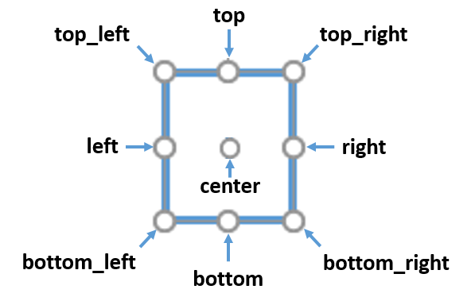

laygo2의 구조#
laygo2는 다음과 같은 패키지들로 구성되어 있다.
object 패키지: laygo2를 구성하는 다양한 물리적 추상적 개체들을 구현하는 모들 (API ref).
interface 패키지: laygo2와 외부(EDA tools, data structures, files)와의 상호작용 개체 및 함수들에 관한 패키지 (API ref).
각각의 패키지들에 대한 설명은 아래에 기술되어 있으며, 각 함수 및 클래스, 클래스 변수, 클래스 메소드에 대한 상세한 설명은 상단 메뉴의 API reference를 참조.
object 패키지#
laygo2의 레이아웃 생성 과정 및 결과물에 관여하는 다양한 물리적(physical), 추상적(abstract) 개체들을 구현한 클래스들을 포함한다. Object 패키지을 구성하는 모듈들의 종류는 다음과 같다.
physical 모듈: 레이아웃을 구성하는 물리 개체들에 관한 패키지 (API ref).
template 모듈: 레이아웃 인스턴스를 생성하는 다양한 종류의 템플릿을 기술하는 클래스들을 포함한다 (API ref).
grid 모듈: 공정 포팅 및 파라미터화가 용이한 레이아웃 생성을 위하여 도입된 추상화된 격자들을 기술하는 클래스들을 포함한다 (API ref).
database 모듈: 생성된 레이아웃 디자인의 계층구조를 담는 라이브러리 및 디자인 클래스들을 포함한다 (API ref).
laygo2.object package의 UML diagram이 다음 그림에 나타나 있다.

physical 모듈#
physical 모듈은 레이아웃을 구성하는 다양한 물리 개체들을 기술하는 다음과 같은 클래스들로 구성된 모듈이다. 이 모듈은 다음과 같은 클래스들을 구현한다.
PhysicalObject(object): 물리 개체들의 기본 클래스 (API ref).
IterablePhysicalObject(PhysicalObject): 물리 개체들 중 iterable 연산이 가능한 개체들의 기본 클래스 (API ref).
PhysicalObjectGroup(IterablePhysicalObject): (예정) 물리 개체들의 그룹을 위한 클래스 (API ref).
Instance(IterablePhysicalObject): Instance 개체 클래스 (API ref).
VirtualInstance(IterablePhysicalObject): Instance 개체 클래스 (API ref).
Physical 모듈에 속한 다양한 개체들을 생성한 예시들이 아래 그림에 나타나 있다.

PhysicalObject 클래스#
PhysicalObject 클래스는 물리 개체들의 기본적인 동작을 구현하며, 다음과 같은 주요 속성과 메소드들을 내포한다.
주요 속성
name: str, 개체의 이름.
xy: numpy.ndarray(np.int), 개체의 위치 좌표.
bbox: numpy.ndarray(np.int), 개체의 bounding box.
master: PhysicalObject or None, (개체가 다른 개체의 구성원일 때) 개체가 속한 주인 개체.
params: Dict, 개체의 속성.
pointers: Dict, 개체와 관련된 주요 좌표들.
left, right, top, bottom, center, bottom_left, bottom_right, top_left, top_right: numpy.ndarray(np.int), 개체와 관련된 주요 좌표들 (pointers의 일부).

주요 메소드
__init__(xy, name, params=None): 생성자.
IterablePhysicalObject 클래스#
IterablePhysicalObject 클래스는 iteration이 가능한 물리 개체를 구현한다.
주요 속성
name: PhysicalObject 참조.
xy: PhysicalObject 참조.
bbox: PhysicalObject 참조.
master: PhysicalObject 참조.
params: PhysicalObject 참조.
pointers: PhysicalObject 참조.
left, right, top, bottom, center, bottom_left, bottom_right, top_left, top_right: PhysicalObject 참조.
elements: numpy.ndarray(PhysicalObject), 개체의 구성원.
shape: numpy.ndarray(np.int), elements의 shape.
주요 메소드
__init__(xy, name=None, params=None, elements=None): 생성자.
ndenumerate(): 개체의 구성원들(elements)에 대해 ndenumerate() 수행.
PhysicalObjectGroup 클래스#
(구현 예정) PhysicalObjectGroup 클래스는 물리 개체들로 구성된 그룹을 구현한다.
Rect 클래스#
Rect 클래스는 사각형 개체를 구현한다.
주요 속성
name: PhysicalObject 참조.
xy: np.ndarray(dtype=np.int), 개체의 bottom-left 및 top-right 코너 좌표들.
bbox: PhysicalObject 참조.
master: PhysicalObject 참조.
params: PhysicalObject 참조.
pointers: PhysicalObject 참조.
left, right, top, bottom, center, bottom_left, bottom_right, top_left, top_right: PhysicalObject 참조.
layer: [str, str], 개체의 레이어 정보.
netname: str, 개체의 노드명.
hextension: int, 개체의 수평방향으로의 확장 값.
vextension: int, 개체의 수직방향으로의 확장 값.
height: int, 개체의 높이.
width: int, 개체의 폭.
size: np.array(dtype=np.int), 개체의 크기.
주요 메소드
__init__(xy, layer, hextension=0, vextension=0, name=None, netname=None, params=None): 생성자.
Path 클래스#
Path 클래스는 경로 개체를 구현한다.
주요 속성
name: PhysicalObject 참조.
xy: np.ndarray(dtype=np.int), 개체의 경로점 좌표들.
bbox: PhysicalObject 참조.
master: PhysicalObject 참조.
params: PhysicalObject 참조.
layer: [str, str], 개체의 레이어 정보.
netname: str, 개체의 노드명.
extension: int, 개체의 말단부에서의 확장 값.
width: int, 개체의 폭.
주요 메소드
__init__(xy, layer, width, extension=0, name=None, netname=None, params=None): 생성자.
Pin 클래스#
Pin 클래스는 디자인 또는 인스턴스의 라우팅을 위한 핀(포트, 터미널) 개체를 구현한다.
주요 속성
name: IterablePhysicalObject 참조.
xy: 개체의 bottom-left 및 top-right 코너 좌표들.
bbox: IterablePhysicalObject 참조.
master: Instance or VirtualInstance, (해당 개체가 특정 인스턴스에 속한 핀일 때) 핀 개체의 마스터 인스턴스.
params: IterablePhysicalObject 참조.
pointers: IterablePhysicalObject 참조.
left, right, top, bottom, center, bottom_left, bottom_right, top_left, top_right: IterablePhysicalObject 참조.
elements: IterablePhysicalObject 참조.
shape: IterablePhysicalObject 참조.
layer: [str, str], 개체의 레이어 정보.
netname: str, 개체의 노드명.
height: int, 개체의 높이.
width: int, 개체의 폭.
size: np.array(dtype=np.int), 개체의 크기.
주요 메소드
__init__(xy, layer, name=None, netname=None, params=None, master=None, elements=None): 생성자.
ndenumerate(): IterablePhysicalObject 참조.
export_to_Dict(): 개체의 정보를 담은 Dict를 반환.
Text 클래스#
Text 클래스는 텍스트 표식 개체를 구현한다.
주요 속성
name: PhysicalObject 참조.
xy: PhysicalObject 참조.
bbox: PhysicalObject 참조.
master: PhysicalObject 참조.
params: PhysicalObject 참조.
pointers: PhysicalObject 참조.
left, right, top, bottom, center, bottom_left, bottom_right, top_left, top_right: PhysicalObject 참조.
layer: [str, str], 개체의 레이어 정보.
text: str, 개체의 텍스트 내용.
주요 메소드
**__init__(xy, layer, text, name=None, params=None): 생성자.
Instance 클래스#
Instance 클래스는 독립된 하나의 인스턴스 또는 인스턴스 배열을 구성한다.
주요 속성
name: IterablePhysicalObject 참조.
xy: 개체의 bottom-left 및 top-right 코너 좌표들.
bbox: IterablePhysicalObject 참조.
master: Instance or VirtualInstance, (해당 개체가 특정 인스턴스에 속한 하위 인스턴스일 때) 개체의 마스터 인스턴스.
params: IterablePhysicalObject 참조.
pointers: IterablePhysicalObject 참조.
left, right, top, bottom, center, bottom_left, bottom_right, top_left, top_right: IterablePhysicalObject 참조.
elements: IterablePhysicalObject 참조.
shape: IterablePhysicalObject 참조.
libname: str, 개체가 속한 라이브러리 이름.
cellname: str, 개체가 속한 셀 이름.
unit_size: np.array(dtype=np.int) 개체가 배열로 구성되어 있을 때 단위 크기.
transform: str, 개체의 변환 속성.
pins: Dict[Pin], 개체에 속한 핀들을 모아놓은 Dict.
xy0: np.array(dtype=np.int), 개체의 주 코너 좌표.
xy1: np.array(dtype=np.int), 개체의 보조 코너 좌표.
size: np.array(dtype=np.int), 개체의 크기.
pitch: np.array(dtype=np.int), 배열로 구성된 개체의 단위 개체간 간격.
spacing: pitch와 동일 (GDS-II와 용어를 맞추기 위하여 도입됨).
height: int, 개체의 높이.
width: int, 개체의 폭.
주요 메소드
__init__(xy, libname, cellname, shape=None, pitch=None, transform=’R0’, unit_size=np.array([0, 0]), pins=None, name=None, params=None): 생성자.
ndenumerate(): IterablePhysicalObject 참조.
VirtualInstance 클래스#
VirtualInstance 클래스는 복수 개의 물리 개체로 구성된 하나의 가상 인스턴스 또는 가상 인스턴스의 배열을 구현한다.
주요 속성
name: IterablePhysicalObject 참조.
xy: 개체의 bottom-left 및 top-right 코너 좌표들.
bbox: IterablePhysicalObject 참조.
master: Instance or VirtualInstance, (해당 개체가 특정 인스턴스에 속한 하위 인스턴스일 때) 개체의 마스터 인스턴스.
params: IterablePhysicalObject 참조.
pointers: IterablePhysicalObject 참조.
left, right, top, bottom, center, bottom_left, bottom_right, top_left, top_right: IterablePhysicalObject 참조.
elements: IterablePhysicalObject 참조.
shape: IterablePhysicalObject 참조.
libname: Instance 참조.
cellname: Instance 참조.
unit_size: Instance 참조.
transform: Instance 참조.
pins: Instance 참조.
xy0: Instance 참조.
xy1: Instance 참조.
size: Instance 참조.
pitch: Instance 참조.
spacing: Instance 참조.
height: Instance 참조.
width: Instance 참조.
native_elements: Dict[PhysicalObject], 가상 인스턴스를 구성하는 물리 개체들을 모아 놓은 Dict. 해당 Dict의 key는 물리 개체들의 이름으로 구성하여야 한다.
주요 메소드
__init__(xy, libname, cellname, native_elements, shape=None, pitch=None, transform=’R0’, unit_size=np.array([0, 0]), pins=None, name=None, params=None): 생성자.
ndenumerate(): IterablePhysicalObject 참조.
template 모듈#
template 모듈은 인스턴스 및 가상 인스턴스를 추상화하는 템플릿 클래스들로 구성된 모듈이다 (API ref). 이 모듈은 다음과 같은 클래스들을 구현한다.
NativeInstanceTemplate(Template): 기본 Instance 개체를 생성하는 템플릿 클래스 (API ref).
ParameterizedInstanceTemplate(Template): 사용자 정의된 bbox function을 활용하여 Parameterized Instance 개체를 생성하는 템플릿 클래스 (API ref).
UserDefinedTemplate(Template): 사용자 정의된 bbox / pins / generate function들을 활용하여 VirtualInstance 개체를 생성하는 템플릿 클래스 (API ref).
Template 클래스#
Template 클래스는 기본적인 템플릿 기능을 구현하며, 다음과 같은 주요 속성과 메소드들을 내포한다.
주요 속성
name: str, 템플릿의 이름.
주요 메소드
__init__(name): 생성자.
height(params=None): 템플릿의 높이를 반환.
width(params=None): 템플릿의 폭을 반환.
size(params=None): 템플릿의 크기를 반환.
bbox(params=None): (추상 메소드) 템플릿의 bounding box를 반환.
pins(params=None): (추상 메소드) 템플릿의 pin을 모아놓은 dict를 반환.
generate(name=None, shape=None, pitch=np.array([0, 0]), transform=’R0’, params=None): (추상 메소드) 템플릿으로부터 생성된 인스턴스 개체를 반환.
NativeInstanceTemplate 클래스#
NativeInstanceTemplate 클래스는 기본 Instance를 반환하는 템플릿을 구현하며, 다음과 같은 주요 속성과 메소드들을 내포한다.
주요 속성
name: Template 참조.
libname: str, 생성되는 인스턴스의 libname.
cellname: str, 생성되는 인스턴스의 cellname.
주요 메소드
ParameterizedInstanceTemplate 클래스#
ParameterizedInstanceTemplate 클래스는 Parameterized Instance를 반환하는 템플릿을 구현하며, 다음과 같은 주요 속성과 메소드들을 내포한다.
주요 속성
name: Template 참조.
libname: NativeInstanceTemplate 참조.
cellname: NativeInstanceTemplate 참조.
주요 메소드
UserDefinedTemplate 클래스#
UserDefinedTemplate 클래스는 VirtualInstance를 반환하는 템플릿을 구현하며, 다음과 같은 주요 속성과 메소드들을 내포한다.
주요 속성
name: Template 참조.
libname: NativeInstanceTemplate 참조.
cellname: NativeInstanceTemplate 참조.
주요 메소드
grid 모듈#
grid 모듈은 물리 좌표계(physical coordinate system)를 추상화하는 추상 좌표계(abstract coordinate system)를 구현하는 클래스들로 구성된 모듈이다.
laygo2는 공정 및 소자 파라미터에 영향을 받지 않는 추상 좌표계(abstract-coordinate system)를 기반으로 레이아웃을 생성한다 (아래 그림 참조).

Grid 모듈은 다음과 같은 클래스들을 구현한다.
CircularMapping: 기본 순환 맵핑 클래스 (API ref).
CircularMappingArray(CircularMapping): 다차원 순환 맵핑 클래스 (API ref).
_AbsToPhyGridConverter: 내부 추상-물리 좌표 변환기 클래스 (API ref).
_PhyToAbsGridConverter: 내부 물리-추장 좌표 변환기 클래스 (API ref).
OneDimGrid(CircularMapping): 1차원 격자 클래스 (API ref).
PlacementGrid(Grid): 인스턴스 배치용 2차원 격자 클래스 (API ref).
RoutingGrid(Grid): 배선 라우팅용 2차원 격자 클래스 (API ref).
CircularMapping 클래스#
CircularMapping 클래스는 기본적인 순환 맵핑 (인덱싱 넘버가 순환하며 무한히 확장)을 구현한다. CircularMapping의 사용 예시가 다음 코드 블록에 나타나 있다.
>>> map = CircularMapping(elements=[100, 200, 300])
>>> print(map[0])
100
>>> print(map[2])
300
>>> print(map[4])
200
>>> print(map[-3])
100
>>> print(map[[2, 3, -2])
[300, 100, 200]
>>> print(map[2:7])
[300, 100, 200, 300, 100]
CircularMapping 클래스는 다음과 같은 주요 속성과 메소드들을 내포한다.
주요 속성
dtype: type, 순환 맵핑의 데이터 유형.
elements: numpy.array(dtype=self.dtype), 순환 맵핑의 구성 요소로 이루어진 배열.
shape: numpy.array(dtype=numpy.int), 순환 맵핑의 shape.
주요 메소드
__init__(elements, dtype=np.int): 생성자.
__getitem__(pos): 순환 맵핑의 요소 접근 함수.
__iter__(): 순환 맵핑의 iteration 함수.
__next__(): 순환 맵핑의 다음 요소 접근 함수.
CircularMappingArray 클래스#
CircularMappingArray 클래스는 다차원 순환 맵핑 (인덱싱 넘버가 순환하며 무한히 확장)을 구현하며, 순환 맵핑이 필요한 1차원 이상의 배열 구조를 표현하는데 사용된다 (예) 2차원 Via map). CircularMappingArray는 다음과 같은 주요 속성과 메소드들을 내포한다.
주요 속성
dtype: CircularMapping 참조.
elements: CircularMapping 참조.
shape: CircularMapping 참조.
주요 메소드
__init__(elements, dtype=np.int): CircularMapping 참조.
__getitem__(pos): CircularMapping 참조.
__iter__(): CircularMapping 참조.
__next__(): CircularMapping 참조.
_AbsToPhyGridConverter 클래스#
_AbsToPhyGridConverter 내부 클래스는 추상 좌표를 물리 좌표로 변환하는 기능을 구현한다. 이 클래스는 역변환(물리->추상)을 비교 연산자를 통하여 지원하며, 역변환 기능을 위해서 항상 _PhyToAbsGridConverter 와 쌍으로 동작한다.

_AbsToPhyGridConverter 클래스는 다음과 같은 주요 속성과 메소드들을 내포한다.
주요 속성
master: OneDimGrid or Grid, 클래스가 속한 좌표계.
주요 메소드
__init__(master): 생성자.
__getitem__(pos): 요소 접근 함수. 추상 좌표를 입력(pos)으로 받아 대응되는 물리 좌표 반환.
__call__(pos): 요소 접근 함수. 추상 좌표를 입력(pos)으로 받아 대응되는 물리 좌표 반환.
__eq__(other), __lt__(other), __le__(other), __gt__(other), __ge__(other): (역변환 함수) 부등식 조건을 만족하는 추상 좌표 반환.
_PhyToAbsGridConverter 클래스#
_PhyToAbsGridConverter 내부 클래스는 물리 좌표를 추상 좌표로 변환하는 기능을 구현하며, 이 클래스는 역변환(추상->물리)을 비교 연산자를 통하여 지원하며, 역변환 기능을 위해서 항상 _AbsToPhyGridConverter

_PhyToAbsGridConverter 클래스는 다음과 같은 주요 속성과 메소드들을 내포한다.
주요 속성
master: OneDimGrid or Grid, 클래스가 속한 좌표계.
주요 메소드
__init__(master): 생성자.
__call__(pos): 요소 접근 함수. 물리 좌표를 입력(pos)으로 받아 대응되는 추상 좌표 반환.
__getitem__(pos): 요소 접근 함수. 물리 좌표를 입력(pos)으로 받아 대응되는 추상 좌표 반환.
__eq__(other), __lt__(other), __le__(other), __gt__(other), __ge__(other): 부등식 조건을 만족하는 물리 좌표 반환.
bbox(obj): obj의 bounding box를 추상 좌표로 변환하여 반환.
bottom_left(obj): obj의 bottom-left 코너 좌표를 추상 좌표로 변환하여 반환.
bottom_right(obj): obj의 bottom-right 코너 좌표를 추상 좌표로 변환하여 반환.
top_left(obj): obj의 top-left 코너 좌표를 추상 좌표로 변환하여 반환.
top_right(obj): obj의 top-right 코너 좌표를 추상 좌표로 변환하여 반환.
width(obj): obj의 가로 폭을 추상 좌표로 변환하여 반환.
height(obj): obj의 세로 높이를 추상 좌표로 변환하여 반환.
size(obj): obj의 크기([width, height])를 추상 좌표로 변환하여 반환.
crossing(*args): *args로 입력받은 개체들의 교차점을 추상 좌표로 변환하여 반환.
overlap(*args, type=’bbox’): *args로 입력받은 개체들의 겹치는 영역을 추상 좌표로 변환하여, type에 명시된 형태로 반환. type=’bbox’인 경우, bounding box의 형태로 반환하고, type=’array’의 경우, 겹치는 영역 내에 존재하는 모든 좌표들을 2차원 형태의 배열로 반환하며, type=’list’의 경우는 1차원 리스트로 반환.
union(*args): *args로 입력받은 개체들을 모두 포괄하는 bounding box를 추상 좌표로 변환하여 반환.
OneDimGrid 클래스#
OneDimGrid 클래스는 1차원 추상 좌표계를 구현하며, 다음과 같은 주요 속성과 메소드들을 내포한다.
주요 속성
name: str, 좌표계 이름.
range: numpy.ndarray(dtype=np.int), 좌표계가 정의된 영역. 좌표계는 정의된 영역의 좌표들이 반복되는 형태로 확장된다.
phy2abs: _PhyToAbsConverter, 물리-추상 좌표 변환 개체.
abs2phy: _AbsToPhyConverter, 추상-물리 좌표 변환 개체.
width: int, 좌표계가 정의된 영역의 크기.
주요 메소드
__init__(name, scope, elements=np.array([0])): 생성자.
__getitem__(pos): 요소 접근 함수. 추상 좌표를 입력(pos)으로 받아 대응되는 물리 좌표 반환.
__eq__(other), __lt__(other), __le__(other), __gt__(other), __ge__(other): 부등식 조건을 만족하는 물리 좌표 반환.
export_to_dict(): 그리드의 정보를 담은 dict개체 반환.
Grid 클래스#
Grid 클래스는 2차원 물리 좌표계로 맵핑되는 추상 좌표계를 구현한다.
Grid 클래스와 하위 개체들은 다양한 좌표 변환 동작을 지원하며, 아래 그림은 좌표 변환 방식의 예들을 나타낸 것이다.

Grid 클래스는 다음과 같은 주요 속성과 메소드들을 내포한다.
주요 속성
name: str, 좌표계 이름.
range: numpy.ndarray(dtype=np.int), 좌표계가 정의된 영역. 좌표계는 정의된 영역의 좌표들이 반복되는 형태로 확장된다.
phy2abs: PhyToAbsConverter, 물리-추상 좌표 변환 개체.
abs2phy: AbsToPhyConverter, 추상-물리 좌표 변환 개체.
xy: List[OneDimGrid], x, y축을 구성하는 추상 좌표계를 모아놓은 list ([x, y]).
x: OneDimGrid, x축 방향의 추상 좌표계.
y: OneDimGrid, y축 방향의 추상 좌표계.
v: x와 동일.
h: y와 동일.
mn: abs2phy와 동일
width: int, 좌표계가 정의된 영역의 폭.
height: int, 좌표계가 정의된 영역의 높이.
주요 메소드
__init__(name, scope, elements=np.array([0])): 생성자.
__getitem__(pos): 요소 접근 함수. 추상 좌표를 입력(pos)으로 받아 대응되는 물리 좌표 반환.
__eq__(other), __lt__(other), __le__(other), __gt__(other), __ge__(other): 부등식 조건을 만족하는 물리 좌표 반환.
bbox(obj): _PhyToAbsGridConverter 참조.
bottom_left(obj): _PhyToAbsGridConverter 참조.
bottom_right(obj): _PhyToAbsGridConverter 참조.
top_left(obj): _PhyToAbsGridConverter 참조.
top_right(obj): _PhyToAbsGridConverter 참조.
width(obj): _PhyToAbsGridConverter 참조.
height(obj): _PhyToAbsGridConverter 참조.
size(obj): _PhyToAbsGridConverter 참조.
crossing(*args): _PhyToAbsGridConverter 참조.
overlap(*args, type=’bbox’): _PhyToAbsGridConverter 참조.
union(*args): _PhyToAbsGridConverter 참조.
PlacementGrid 클래스#
PlacementGrid 클래스는 Instance 및 VirtualInstance 개체들의 배치를 위한 격자 그리드를 구현하며, 다음과 같은 주요 속성과 메소드들을 내포한다.
주요 속성
주요 메소드
__init__(name, scope, elements=np.array([0])): 생성자.
__getitem__(pos): 요소 접근 함수. 추상 좌표를 입력(pos)으로 받아 대응되는 물리 좌표 반환.
__eq__(other), __lt__(other), __le__(other), __gt__(other), __ge__(other): 부등식 조건을 만족하는 물리 좌표 반환.
bbox(obj): Grid 참조.
bottom_left(obj): Grid 참조.
bottom_right(obj): Grid 참조.
top_left(obj): Grid 참조.
top_right(obj): Grid 참조.
width(obj): Grid 참조.
height(obj): Grid 참조.
size(obj): Grid 참조.
crossing(*args): Grid 참조.
overlap(*args, type=’bbox’): Grid 참조.
union(*args): Grid 참조.
RoutingGrid 클래스#
RoutingGrid 클래스는 Routing Wire/Via들의 배치를 위한 격자 그리드를 구현하며, 다음과 같은 주요 속성과 메소드들을 내포한다.
주요 속성
name: Grid 참조.
range: Grid 참조.
phy2abs: Grid 참조.
abs2phy: Grid 참조.
xy: Grid 참조.
x: Grid 참조.
y: Grid 참조.
v: Grid 참조.
h: Grid 참조.
mn: Grid 참조.
width: Grid 참조.
height: Grid 참조.
type: str, 격자 유형. routing으로 고정.
vwidth: CircularMapping, 수직 wire들의 폭.
hwidth: CircularMapping, 수평 wire들의 폭.
vextension: CircularMapping, 수직 wire들의 extension.
hextension: CircularMapping, 수평 wire들의 extension.
vlayer: CircularMapping, 수직 wire들의 레이어 정보.
hlayer: CircularMapping, 수평 wire들의 레이어 정보.
pin_vlayer: CircularMapping, 수직 pin wire들의 레이어 정보.
pin_hlayer: CircularMapping, 수평 pin wire들의 레이어 정보.
viamap: CircularMappingArray, 그리드 교차점에 위치하는 Via개체들을 담고 있는 배열.
primary_grid: str, 길이가 0인 wire의 방향.
주요 메소드
__init__(name, scope, elements=np.array([0])): 생성자.
__getitem__(pos): 요소 접근 함수. 추상 좌표를 입력(pos)으로 받아 대응되는 물리 좌표 반환.
__eq__(other), __lt__(other), __le__(other), __gt__(other), __ge__(other): 부등식 조건을 만족하는 물리 좌표 반환.
bbox(obj): Grid 참조.
bottom_left(obj): Grid 참조.
bottom_right(obj): Grid 참조.
top_left(obj): Grid 참조.
top_right(obj): Grid 참조.
width(obj): Grid 참조.
height(obj): Grid 참조.
size(obj): Grid 참조.
crossing(*args): Grid 참조.
overlap(*args, type=’bbox’): Grid 참조.
union(*args): Grid 참조.
route(mn, direction=None, via_tag=None): wire라우팅 함수. Routing의 기본 direction과 시작,중간,끝 지점의 Via 배치 유무를 선택 인자로 받음.
via(mn=np.array([0, 0]), params=None): via배치 함수.
pin(name, mn, direction=None, netname=None, params=None): pin배치 함수.
database 모둘#
database 모듈은 디자인과 라이브러리를 관리하는 계층 구조형 데이터베이스를 구현하는 클래스들로 구성된 모듈이다 (API ref). database 모듈은 다음과 같은 클래스들을 구현한다.
BaseDatabase: 기본 데이터베이스 관리 클래스 (API ref).
BaseDatabase 클래스#
BaseDatabase 클래스는 기본적인 데이터베이스 관리 기능을 구현하며, 다음과 같은 주요 속성과 메소드들을 내포한다.
주요 속성
name: str, 데이터베이스 이름.
params: dict or None, 데이터베이스의 파라미터.
noname_index: int, 데이터베이스의 소속 개체들 중 이름이 정해지지 않은 개체의 이름을 사용할 때 부여되는 고유 번호.
keys: list, 소속 개체들을 저장한 dict의 key들.
주요 메소드
items(): 소속 개체들의 iteration 함수.
__getitem__(pos): 순환 맵핑의 요소 접근 함수.
__setitem__(key, item): 순환 맵핑의 요소 추가 함수.
append(item): 요소 추가 함수.
__iter__(): 순환 맵핑의 iteration 함수.
__init__(name, params=None, elements=None): 생성자.
Library 클래스#
Library 클래스는 라이브러리 관리 기능을 구현하며, 다음과 같은 주요 속성과 메소드들을 내포한다.
주요 속성
name: BaseDatabase 참조.
params: BaseDatabase 참조.
noname_index: BaseDatabase 참조.
keys: BaseDatabase 참조.
libname: str, 라이브러리 이름.
주요 메소드
items(): BaseDatabase 참조.
__getitem__(pos): BaseDatabase 참조.
__setitem__(key, item): BaseDatabase 참조.
append(item): BaseDatabase 참조.
__iter__(): BaseDatabase 참조.
__init__(name, params=None, elements=None): 생성자.
Design 클래스#
Design 클래스는 디자인 관리 기능을 구현하며, 다음과 같은 주요 속성과 메소드들을 내포한다.
주요 속성
name: BaseDatabase 참조.
params: BaseDatabase 참조.
noname_index: BaseDatabase 참조.
keys: BaseDatabase 참조.
libname: str, 라이브러리 이름.
cellname: str, 셀 이름.
rects: dict, 소속 Rect 개체들을 모아놓은 dictionary.
paths: dict, 소속 Path 개체들을 모아놓은 dictionary.
pins: dict, 소속 Pin 개체들을 모아놓은 dictionary.
texts: dict, 소속 Text 개체들을 모아놓은 dictionary.
instances: dict, 소속 Instance 개체들을 모아놓은 dictionary.
virtual_instances: dict, 소속 VirtualInstance 개체들을 모아놓은 dictionary.
주요 메소드
items(): BaseDatabase 참조.
__getitem__(pos): BaseDatabase 참조.
__setitem__(key, item): BaseDatabase 참조.
append(item): BaseDatabase 참조.
__iter__(): BaseDatabase 참조.
__init__(name, params=None, elements=None, libname=None): 생성자.
place(inst, grid, mn): 개체를 주어진 그리드를 참조하여 디자인에 배치.
route(grid, mn, direction=None, via_tag=None): Wire를 주어진 그리드를 참조하여 디자인에 배치.
via(grid, mn, params=None): Via를 주어진 그리드를 참조하여 디자인에 배치.
pin(name, grid, mn, direction=None, netname=None, params=None): Pin을 주어진 그리드를 참조하여 디자인에 배치.
export_to_template(libname=None, cellname=None): 디자인에 해당하는 템플릿 생성.
interface 패키지#
interface 패키지는 아래 그림과 같이 laygo2와 외부 EDA 및 데이터 구조들과 상호작용하는 클래스 및 함수들을 포함한다.

gds 모듈: 레이아웃 구조들을 저장하는데 가장 많이 사용되는 파일 형식인 GDS-II 포맷으로 laygo2 디자인들을 입출력하는 함수들을 포함한다.
yaml 모듈: 데이터 구조를 직관적으로 표현하는 형식인 yaml 포맷으로 laygo2 디자인(특히 템플릿)들을 입출력하는 함수들을 포함한다.
virtuoso 모듈: 대표적인 EDA툴인 Cadence의 virtuoso 프로그램에서 사용하는 skill language 포멧으로 laygo2 디자인들을 입출력하는 함수들을 포함한다.
util 패키지#
좌표 변환 및 변형 등 다른 패키지에서 유용하게 사용되는 기능들을 구현한 함수들을 포함한다 (API ref).